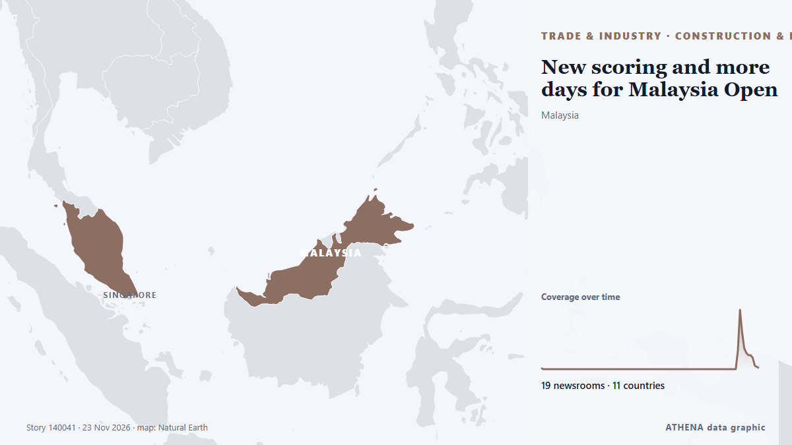

New scoring and more days for Malaysia Open

KUALA LUMPUR: Badminton fans will have more days of action and a new 15-point scoring format to look forward to at the Malaysia Open next month, as tickets go on sale from Nov 24. from New Straits Times
What changed 2 new reports from 1 outlet in the last 24 hours.
See the sources ›Evidence: Limited
Reported independently by 19 outlets in 11 countries since 30 Apr, first by GDACS disaster alerts (UN/EU); coverage is fading. ATHENA rates the risk moderate (3.1/10), driven mainly by the severity of the harm described and its geographic and sector reach. Confidence is 64% (moderate), with 19 independent outlets corroborating it and an average source reliability of 73%. Outlets by country: Malaysia (29), Singapore (2), Japan (2). Coverage: 30 Apr to 21 Nov, 4924 hours.
What changed: 2 new reports from 1 outlets in the 24 hours to 23 Nov.
First reported as: Talent key factor in attracting investments under global minimum tax: Tengku Zafrul
AutomatedSelected, grouped and scored by ATHENA's published method from 10 independent outlets. The headline is the outlet's own; ATHENA's sentences follow fixed patterns - no generative AI writes them. How it works →
How to read this page
- What you are reading
- 19 outlets in 11 countries reported this event. The reports below are listed in the order they appeared; each headline opens the original article. ATHENA writes none of the reports.
- Our reading
- For the record — The reports describe a completed, domestic, commercial or personal matter. We list it so you can see who reported it and when. We are not tracking a risk of wider conflict here.
- How much evidence
- Limited Treat this page as an early report.
After repeats, off-topic items and stale reports are removed, 6 of the 36 listed reports are counted; 39% of the headlines match the event.
- What this does not mean
- ATHENA measures how an event is reported, not whether it is true. This is not a forecast, a judgement on who is right, or advice.
- What would change it
- Reports from other independent outlets showing a different development, or a firm confirmation or denial from an official source.
Reading R2 · refreshed with every update of this page. ATHENA has not yet published a track record for these readings; when it does, it will be linked here.
At a glance
Selected, scored and written by ATHENA's published methodology. No editor intervenes in individual events. How this is produced ›
| 30 Apr 13:07 UTC | 1 |
|---|---|
| 02 May 13:07 UTC | 0 |
| 04 May 13:07 UTC | 0 |
| 06 May 13:07 UTC | 0 |
| 08 May 13:07 UTC | 0 |
| 10 May 13:07 UTC | 0 |
| 12 May 13:07 UTC | 0 |
| 14 May 13:07 UTC | 0 |
| 16 May 13:07 UTC | 0 |
| 18 May 13:07 UTC | 0 |
| 20 May 13:07 UTC | 0 |
| 22 May 13:07 UTC | 0 |
| 24 May 13:07 UTC | 0 |
| 26 May 13:07 UTC | 0 |
| 28 May 13:07 UTC | 0 |
| 30 May 13:07 UTC | 0 |
| 01 Jun 13:07 UTC | 0 |
| 03 Jun 13:07 UTC | 0 |
| 05 Jun 13:07 UTC | 0 |
| 07 Jun 13:07 UTC | 0 |
| 09 Jun 13:07 UTC | 0 |
| 11 Jun 13:07 UTC | 0 |
| 13 Jun 13:07 UTC | 0 |
| 15 Jun 13:07 UTC | 0 |
| 17 Jun 13:07 UTC | 0 |
| 19 Jun 13:07 UTC | 0 |
| 21 Jun 13:07 UTC | 0 |
| 23 Jun 13:07 UTC | 0 |
| 25 Jun 13:07 UTC | 0 |
| 27 Jun 13:07 UTC | 0 |
| 29 Jun 13:07 UTC | 0 |
| 01 Jul 13:07 UTC | 0 |
| 03 Jul 13:07 UTC | 0 |
| 05 Jul 13:07 UTC | 0 |
| 07 Jul 13:07 UTC | 0 |
| 09 Jul 13:07 UTC | 0 |
| 11 Jul 13:07 UTC | 0 |
| 13 Jul 13:07 UTC | 0 |
| 15 Jul 13:07 UTC | 0 |
| 17 Jul 13:07 UTC | 0 |
| 19 Jul 13:07 UTC | 0 |
| 21 Jul 13:07 UTC | 0 |
| 23 Jul 13:07 UTC | 0 |
| 25 Jul 13:07 UTC | 0 |
| 27 Jul 13:07 UTC | 0 |
| 29 Jul 13:07 UTC | 0 |
| 31 Jul 13:07 UTC | 0 |
| 02 Aug 13:07 UTC | 0 |
| 04 Aug 13:07 UTC | 0 |
| 06 Aug 13:07 UTC | 0 |
| 08 Aug 13:07 UTC | 0 |
| 10 Aug 13:07 UTC | 0 |
| 12 Aug 13:07 UTC | 0 |
| 14 Aug 13:07 UTC | 0 |
| 16 Aug 13:07 UTC | 0 |
| 18 Aug 13:07 UTC | 0 |
| 20 Aug 13:07 UTC | 0 |
| 22 Aug 13:07 UTC | 0 |
| 24 Aug 13:07 UTC | 0 |
| 26 Aug 13:07 UTC | 0 |
| 28 Aug 13:07 UTC | 0 |
| 30 Aug 13:07 UTC | 0 |
| 01 Sep 13:07 UTC | 0 |
| 03 Sep 13:07 UTC | 0 |
| 05 Sep 13:07 UTC | 0 |
| 07 Sep 13:07 UTC | 0 |
| 09 Sep 13:07 UTC | 0 |
| 11 Sep 13:07 UTC | 0 |
| 13 Sep 13:07 UTC | 0 |
| 15 Sep 13:07 UTC | 0 |
| 17 Sep 13:07 UTC | 0 |
| 19 Sep 13:07 UTC | 0 |
| 21 Sep 13:07 UTC | 0 |
| 23 Sep 13:07 UTC | 0 |
| 25 Sep 13:07 UTC | 0 |
| 27 Sep 13:07 UTC | 0 |
| 29 Sep 13:07 UTC | 0 |
| 01 Oct 13:07 UTC | 0 |
| 03 Oct 13:07 UTC | 0 |
| 05 Oct 13:07 UTC | 0 |
| 07 Oct 13:07 UTC | 0 |
| 09 Oct 13:07 UTC | 0 |
| 11 Oct 13:07 UTC | 0 |
| 13 Oct 13:07 UTC | 0 |
| 15 Oct 13:07 UTC | 0 |
| 17 Oct 13:07 UTC | 0 |
| 19 Oct 13:07 UTC | 0 |
| 21 Oct 13:07 UTC | 0 |
| 23 Oct 13:07 UTC | 0 |
| 25 Oct 13:07 UTC | 0 |
| 27 Oct 13:07 UTC | 0 |
| 29 Oct 13:07 UTC | 0 |
| 31 Oct 13:07 UTC | 0 |
| 02 Nov 13:07 UTC | 16 |
| 04 Nov 13:07 UTC | 51 |
| 06 Nov 13:07 UTC | 32 |
| 08 Nov 13:07 UTC | 18 |
| 10 Nov 13:07 UTC | 14 |
| 12 Nov 13:07 UTC | 12 |
| 14 Nov 13:07 UTC | 12 |
| 16 Nov 13:07 UTC | 10 |
| 18 Nov 13:07 UTC | 3 |
| 20 Nov 13:07 UTC | 2 |
| 22 Nov 13:07 UTC | 1 |
| 06 Nov 11:01 UTC | 2.0 |
|---|---|
| 12 Nov 09:35 UTC | 2.4 |
| 13 Nov 03:23 UTC | 3.2 |
| 23 Nov 03:09 UTC | 3.1 |
Why these numbers
Importance
How widely and how prominently the story is reported.
Risk
What the reports describe, scored for possible harm. It is not a forecast.
Confidence
How well independent outlets support the story.
Shown as 64% (calculated 84%): the evidence reading is Limited, so confidence is held at moderate.
The reporting — who reported it, and when
headline as published · opens the original- GDACS disaster alerts (UN/EU) · SwitzerlandDrought is on going in Brunei, Indonesia, Cambodia, Laos, Malaysia, Papua New Guinea, Philippines, Singapore, Vietnam
- Mothership · SingaporeAlmost 30% of eligible S'poreans collected free N95 masks, govt to continue prioritising vulnerable residents: Grace Fu
- Malay Mail · MalaysiaAs data centre power share heads for 21pc, Putrajaya moves to avoid ‘phantom demand’ hogging Malaysia’s grid
- New Straits Times · MalaysiaTalent key factor in attracting investments under global minimum tax: Tengku Zafrul
- Malay Mail · MalaysiaTengku Zafrul says Malaysia’s RM431.1b approved investments reflect investor confidence as country courts new partnerships
- New Straits Times · MalaysiaMaybank Premier offers more than preferential deposit rates
- New Straits Times · MalaysiaEnvironmental conditions imposed on data centres, says Anwar
- New Straits Times · MalaysiaSunway debuts at 26th in Fortune 100 regional workplace ranking
- New Straits Times · MalaysiaKee Ming lands RM44.2mil data centre job
- New Straits Times · MalaysiaNi Hsin unit partners China's Horwin for electric motorcycle venture
- Free Malaysia Today · MalaysiaGoogle set to invest RM61bil in Malaysia over 2027-28
- New Straits Times · MalaysiaSunway Construction's unit clinches RM920mil variation works contract in Johor
- Malay Mail · MalaysiaFadhlina warns of ‘scrolling generation’ as gadgets erode reading habits among youth
- Daily News · TanzaniaEnergy Ministry, Malaysia’s FVIS SDN BHD in talks to explore investment areas in Tanzania’s energy sector
- New Straits Times · MalaysiaCountry Heights property auction draws no bidders
- IAEA top news ·IAEA Launches Global Network to Help Countries Monitor and Protect the World’s Lakes
- Nikkei Asia · JapanJapan logistics startups expand cold food networks in Malaysia, Vietnam
- The Independent Singapore · Singapore‘Am I stupid for giving up a SG job offer?’: Malaysian man, 27, has second thoughts about moving to Singapore for work
- Malay Mail · MalaysiaLearn from Trump’s midterm defeat: Guan Eng warns Putrajaya over ‘phantom growth’
- Nikkei Asia · JapanMalaysia's main opposition calls for greater power for states
- New Straits Times · MalaysiaFocus Point expands premium eyewear portfolio
- New Straits Times · MalaysiaAI push to transform government, unlock growth for Malaysian businesses
- Malay Mail · MalaysiaPenang ferry free for Malaysians on Nov 8 for Deepavali
- New Straits Times · MalaysiaMalaysian shoppers turn selective as Asean growth fails to lift FMCG spending
- New Straits Times · Malaysia[UPDATED] Anwar wants more Malaysian-made products on Daiso shelves worldwide
- Malay Mail · MalaysiaOil ‘cocktail’ exports put Malaysia’s palm oil credentials under scrutiny, says maritime industry veteran
- Malay Mail · MalaysiaGovt open to stronger support framework for SMEs moving beyond initial growth, says Fadillah
- Malay Mail · MalaysiaZahid: 2,364 tahfiz students take up skills training, 900 secure Malaysian Skills Certification
- New Straits Times · Malaysia213 Malaysians, including youths, arrested abroad in drug mule cases
- New Straits Times · MalaysiaSunway Construction wins RM1.74bil data centre job in Selangor
- Malaysiakini · Malaysia'Different' stance from Singapore: Malaysia stays diplomatic on haze, says deputy minister
- Free Malaysia Today · MalaysiaYusoff’s suit against Anwar set for pre-trial hearing in January
- Malay Mail · MalaysiaDaiso’s largest global distribution centre on Pulau Indah a vote of confidence in Malaysia, says Anwar
- Malay Mail · MalaysiaMalaysia’s daily afternoon downpour returns with a 10-state thunderstorm warning
- New Straits Times · MalaysiaMalaysia sticks to diplomatic approach on transboundary haze
- New Straits Times · MalaysiaNew scoring and more days for Malaysia Open